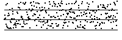
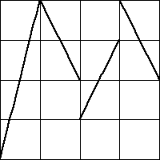
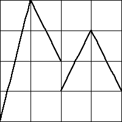
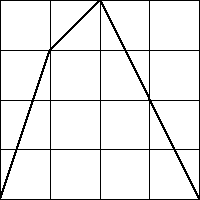

If we are to use driven IFS as the basis for prediction, we must have a choice of bin boundaries natural for the problem at hand. To build some intuition for how the choice of bin boundaries affects the picture, we begin with some exercises to be done by hand, not using the software.
In problems 1 - 5 the horizontal lines locate the bin boundaries B1, B2, and B3.
1. Sketch the driven IFS for these data sets. Click each picture for the answer.
| (a) | (b) | (c) |
2. Assuming the pattern of data points continue forever, locate the points to which the driven IFS converge. Find the coordinates of these points. Click each picture for the answer.
| (a) | (b) |
3. List the empty length 2 addresses in the IFS driven by these data sets. Click each picture for the answer.
| (a) | (b) | |
(c) | |
4. Skectch (very roughly) the driven IFS for these data sets. Explain how you got your results. Click each picture for the answer.
| (a) | (b) |  |
5. Skectch (very roughly) the driven IFS for this data set. Explain how you got your result. Click the picture for the answer.
6. For each of these graphs (plotted in bold, all the functions have domain
and range
| (a) | (b) |  | (c) |  |
7. In any driven IFS with either equal size or equal weight bins, why must bin 1 and bin 4 contain at least one point each (assuming the data points do not all have the same value)? Here is the answer.
8. For any data set, how would you select bin boundaries so no points land in bin 4? Why must this driven IFS be a subset of the gasket? Here is the answer.
9. For any data set, how would you arrange the bin boundaries so no points land in bin 2 and bin 3? With this choice of bins, how does the driven IFS look? Here is the answer.
10. Iterating which of these functions could produce each of these driven IFS? Give a reason supporting each of your answers.
| (a) |  |
(b) |  |
(c) |  |
| (i) |  |
(ii) |  |
Here is the answer.
11. Use driven IFS to analyze the
12. Plot the IFS driven by one-step differences, using the equal size bins. Note the forbidden pairs. Here is the answer.
13. Repeat experiment 12 using longer and longer differences. Comment on any pattern you see. Here is the answer.
14. Repeat experiment 13 using equal weight bins. Comment on any pattern you see. Here is the answer.
Return to Driven IFS Lab.